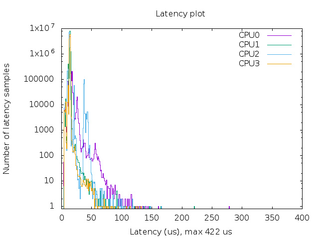
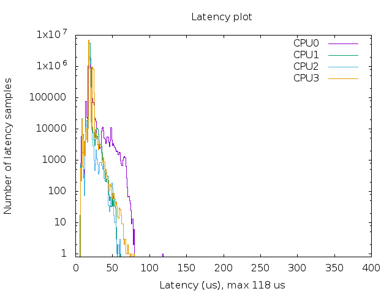

树莓派实时内核编译与测试
1. 简介
本文档主要根据LeMaRiva的博客内容整理并基于最新的rt分支代码复现，简述以下2个方面：
- 如何为树莓派编译实时内核
- 测试实时内核的进程调度延时性能
实验所需硬件：
- 树莓派3B
- 8G TF卡
2. 编译
1.获取代码和工具：
# From LeMaRiva
mkdir rpi-rt
cd rpi-rt
mkdir rt-kernel # 用于存放编译产生的文件
cd rt-kernel
mkdir boot
cd ..
# 获取树梅派源码
git clone https://github.com/raspberrypi/linux.git
# 获取编译工具
git clone https://github.com/raspberrypi/tools.git
cd linux
git checkout rpi-4.14.y-rt # 截至2019年6月16日最新的rt分支
# 配置变量
export ARCH=arm
export CROSS_COMPILE=~/rpi-rt/tools/arm-bcm2708/gcc-linaro-arm-linux-gnueabihf-raspbian/bin/arm-linux-gnueabihf-
export INSTALL_MOD_PATH=~/rpi-rt/rt-kernel
export INSTALL_DTBS_PATH=~/rpi-rt/rt-kernel
# 对RPi 2/3 B以及RPi Compute Module的配置(Compute Module本人测试过，使用该配置)
export KERNEL=kernel7
make bcm2709-defconfig
# 对RPi A(+), B(+), Zero
export KERNEL=kernel
make bcmrpi_defconfig
vim .config
# 确认一下字段的配置
CONFIG_HIGH_RES_TIMERS=y # 默认已配置为y
CONFIG_PREEMPT_RT_FULL=y # 默认已配置为y
CONFIG_HZ_1000=y # 需要手动更改
CONFIG_HZ=1000 # 需要手动更改
2.编译内核
make -j8 zImage
make -j8 modules
make -j8 dtbs
make -j8 modules_install
make -j8 dtbs_install
编译完成后，rt-kernel文件夹中结构为：
.
├── boot
├── lib
├── overlays
├── bcm2708-rpi-0-w.dtb
├── bcm2708-rpi-b.dtb
├── bcm2708-rpi-b-plus.dtb
├── bcm2708-rpi-cm.dtb
├── bcm2709-rpi-2-b.dtb
├── bcm2710-rpi-3-b.dtb
├── bcm2710-rpi-3-b-plus.dtb
├── bcm2710-rpi-cm3.dtb
├── bcm2835-rpi-a.dtb
├── bcm2835-rpi-a-plus.dtb
├── bcm2835-rpi-b.dtb
├── bcm2835-rpi-b-plus.dtb
├── bcm2835-rpi-b-rev2.dtb
├── bcm2835-rpi-zero.dtb
├── bcm2835-rpi-zero-w.dtb
├── bcm2836-rpi-2-b.dtb
└── bcm2837-rpi-3-b.dtb
注意：此处可能产生警告，有关编译时间对应关系的，可以忽略。
./scripts/mkknlimg ./arch/arm/boot/zImage $INSTALL_MOD_PATH/boot/$KERNEL.img
cd $INSTALL_MOD_PATH
tar czf ../rt-kernel.tgz *
scp rt-kernel.tgz pi@<IPAddress>:/tmp
3.替换内核 进入树梅派终端：
cd /tmp
tar xzf rt-kernel.tgz
cd boot
sudo cp -rd * /boot/
cd ../lib
sudo cp -rd * /lib/
~$ sudo nano /boot/config.txt
## 树梅派 3B 或者 Compute Module
kernel=vmlinuz-4.14.91-rt49-v7+
# 树梅派A(+), B(+), Zero
kernel=vmlinuz-4.14.91-rt49+
sudo reboot
如何查看编译内核的版本呢？进入rpi-rt/rt-kernel/lib/modules文件夹下，即可通过文件夹名称看到所编译内核的具体版本号。 LeMaRiva博客中提到了需要在cmdline.txt中进行额外的设置。不过我在3B和Compute Module中都未添加那些额外的配置，测试未发现问题，可能是因为在最新的实时内核中已经修复了bug。重启后查看内核版本号即可确认内核替换成功：
uname -r
4.14.91-rt49-v7+
3. 验证与测试
可以采用rt-tests工具中的cyclictest对于内核的进程响应延时进行测试。参考Tiejun Chen的分享的脚本，可以自动测试并调用gnuplot生成测试结果图像。
下载编译rt-tests：
sudo apt-get install build-essential # libnuma-dev在raspbian stretch中找不到，也不需要
git clone git://git.kernel.org/pub/scm/utils/rt-tests/rt-tests.git
cd rt-tests
git checkout stable/v1.0
make all
sudo make install
自动化测试脚本：
wget https://www.osadl.org/uploads/media/mklatencyplot.bash
sudo apt install gnuplot # 该脚本使用gnuplot
为了节约测试验证的时间，我把该脚本中的次数由1e8改成了1e7。这可能导致样本不够，但是也足够表现实时内核的性能。 实测在默认内核下，最大延时为422us；而在实时内核下，最大延时为118us。
 
4. 参考
- 原文作者：Hao Dong
- 原文链接：https://haodongnj.github.io/haodongnj/post/rpi-rt-kernel/
- 版权声明：本作品采用知识共享署名-非商业性使用-禁止演绎 4.0 国际许可协议进行许可，非商业转载请注明出处（作者，原文链接），商业转载请联系作者获得授权。